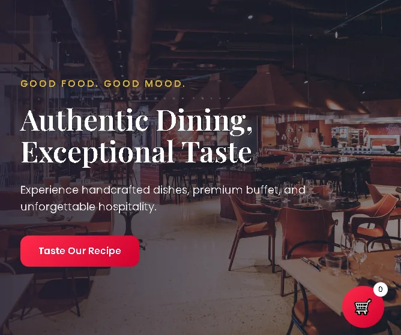
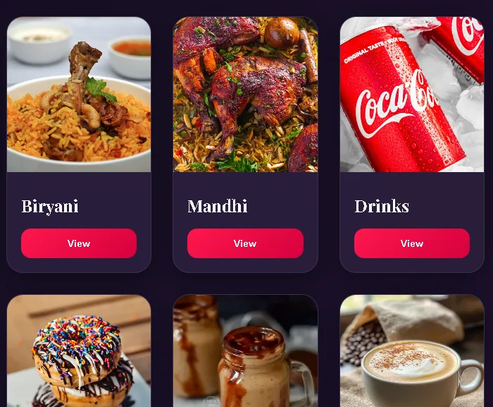

Website Development
Responsive company, service and campaign websites built around your brand, content and business goals.
Website development details →Quartz Web Solutions, founded by Sabith Salah K P, is a Kerala-based website design and development agency creating premium, professional and SEO-ready websites for shops, local businesses, companies and growing brands. We build fast business websites, e-commerce stores, web applications and mobile-first digital experiences for Malappuram, Kozhikode (Calicut) and clients across Kerala, with technical SEO, structured data, clean indexing foundations and long-term scalability built in.
We combine design, development and practical business thinking to create digital products that feel polished, work reliably and remain easy to improve as your business grows.
Responsive company, service and campaign websites built around your brand, content and business goals.
Website development details →Customer portals, dashboards, admin systems and custom browser-based products for real operational use.
Web app development details →Product discovery, catalog, ordering and transaction-ready experiences with smooth customer journeys.
E-commerce development details →Modern interface systems with strong hierarchy, thoughtful interaction and consistent mobile-to-desktop experiences.
UI/UX design details →Technical foundations for discoverability, fast loading, mobile usability and cleaner search-engine understanding.
SEO & performance details →Post-launch improvements, redesigns, deployment support, issue resolution and ongoing product maintenance.
Quartz Web Solutions creates practical, search-friendly websites for shops, restaurants, service businesses, e-commerce brands and teams that need a professional online presence in Kerala.


Quartz Web Solutions works across strategy, interface design, development, testing and ongoing support. We keep the process clear and collaborative, with every project shaped around the actual requirements of the business.
Our work ranges from focused company websites to e-commerce, customer experiences, internal tools and larger web platforms. The goal stays the same: create something professional, dependable and ready to grow.
We define the requirement before designing the solution.
Every screen, interaction and technical choice should have a reason.
Launch is the beginning of a product, not the end of the work.
Tell us what you are working on and what you need. We will continue the conversation directly and help define the right next step.